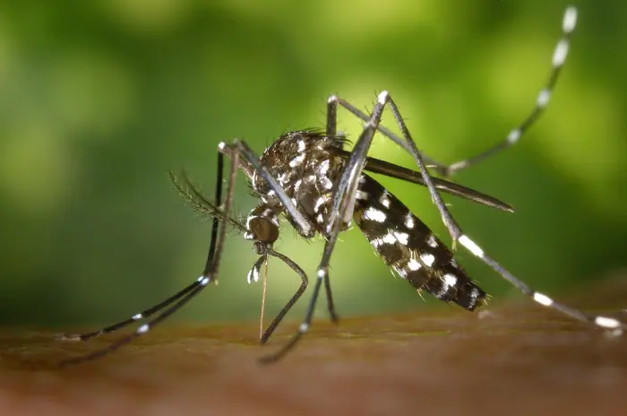

Dengue-carrying mosquitoes expand their reach into new territories – including Florida

What happened
In late 2023, the Florida Department of Health confirmed several autochthonous dengue infections in the Tampa Bay area. These were the first local transmissions reported in the state since the 1960s. The cases involved residents who had no recent travel history to dengue‑endemic regions, indicating local mosquito‑borne spread [T3]. That same year, Texas and Puerto Rico reported their own autochthonous cases, underscoring a broader northward expansion of dengue transmission in the United States [T3]. Public‑health authorities are now monitoring the situation closely, with routine testing of travelers and community surveillance of mosquito populations.
Background and context
Historical backdrop
Florida’s relationship with dengue dates back to the 1950s and 1960s, when the state experienced periodic outbreaks linked to *Aedes aegypti* mosquitoes introduced through international trade and travel. Since that era, dengue incidence has been negligible, with sporadic cases reported only among travelers returning from endemic regions [T3]. The recent resurgence signals a shift in the epidemiological landscape and raises questions about the factors that have made dengue viable in a climate that had previously been unsuitable for sustained transmission.
Climate drivers
The United States has experienced a series of intense heatwaves over the past decade, with Florida recording record‑high temperatures in 2023. Climate models project further warming in the southeastern United States, accompanied by increased rainfall intensity during the wet season. These conditions create ideal breeding habitats for *Aedes* mosquitoes, which thrive in warm, humid environments and in standing water such as discarded containers and poorly drained infrastructure [T3]. Elevated temperatures and abundant rainfall have been linked to higher mosquito survival rates and accelerated viral replication, potentially shortening the extrinsic incubation period of dengue virus in vectors [T3].
Global travel and trade
Florida’s status as a major international travel hub amplifies the risk of dengue importation. In 2023, the state welcomed over 70 million visitors, including a growing number of travelers from dengue‑endemic countries in Latin America, the Caribbean, and Southeast Asia [T3]. Importation of goods—particularly used tires, ornamental plants, and other items that can harbor mosquito eggs—provides another vector for introducing *Aedes* mosquitoes into new locales [T3]. Infected travelers can seed local transmission if they are bitten by competent mosquitoes in the days following arrival, a scenario that has already been documented in Texas and Puerto Rico [T3].
Urbanization and infrastructure
Florida’s coastal cities have expanded rapidly, with new residential developments, commercial districts, and recreational facilities sprouting along the shoreline. Many of these projects rely on water‑storage systems that, if not properly maintained, can become breeding sites for *Aedes* mosquitoes. Aging drainage infrastructure in older neighborhoods often fails to cope with increased rainfall, leading to standing water in gutters, abandoned containers, and low‑lying areas [T3]. Urban heat islands—areas where temperatures are significantly higher than surrounding rural zones—further enhance mosquito development and viral replication rates [T3].
Vector competence uncertainty
While *Aedes aegypti* is the primary dengue vector worldwide, Florida’s mosquito fauna also includes *Aedes albopictus*, which has been detected in several counties. Laboratory studies show that Florida populations of both species can become infected with dengue virus and transmit it under controlled conditions. Field studies, however, have produced mixed results. Some surveys indicate low infection rates in wild mosquito populations, while others suggest potential for sustained transmission under favorable conditions [T3]. This uncertainty complicates risk assessments and the design of targeted control strategies.
Surveillance gaps
Current dengue surveillance in Florida relies largely on passive reporting from hospitals and clinics, with limited capacity for rapid laboratory confirmation. Many cases may go undiagnosed, especially if patients present with nonspecific symptoms that overlap with other febrile illnesses. Mosquito surveillance is fragmented across counties, with variable funding and differing protocols for trapping, testing, and reporting. The lack of a unified, real‑time surveillance system hampers early detection and timely public‑health responses [T3].
Economic considerations
Implementing widespread insecticide spraying and larval source reduction can be costly, especially for municipalities with constrained budgets. In 2023, the Florida Department of Health allocated approximately $12 million for vector control activities, a figure criticized as insufficient given the growing threat [T3]. The hospitality sector—tourism, hotels, and restaurants—has expressed concern that heightened vector‑control measures could deter visitors and damage the state’s economic profile. Conversely, the potential loss of tourism revenue due to public perception of disease risk could outweigh the cost of preventive measures. Economists and public‑health officials debate whether proactive prevention is more cost‑effective than reactive outbreak response [T3].
Vaccine and long‑term strategy
A dengue vaccine, CYD‑TDV (Dengvaxia), has been licensed in several countries but is not yet approved for use in the United States. The vaccine’s efficacy varies by serotype and prior exposure status, and it carries a risk of severe disease in seronegative individuals. Consequently, the Centers for Disease Control and Prevention (CDC) has not recommended the vaccine for U.S. residents, and no domestic vaccine trials have yet reached phase III in the United States [T3]. In the absence of a vaccine, sustained vector control, public education, and early case detection remain the cornerstone of dengue prevention strategies in Florida [T3].
The bigger picture
Public‑health front‑line
Florida’s health agencies are adopting a multi‑layered approach that includes community education campaigns, targeted insecticide applications, and enhanced laboratory testing. Officials emphasize eliminating standing water, using personal protective measures such as repellents and screens, and seeking prompt medical care if symptoms develop after travel or local exposure. The state’s emergency preparedness plans now incorporate dengue as a priority disease, with protocols for rapid response and interagency coordination [T3].
Policy dilemma
Responsibility for vector control is contested. State agencies set guidelines and provide technical assistance, but local governments and private property owners are often tasked with implementing measures on the ground. Some municipalities have adopted ordinances that require property owners to maintain drainage systems and eliminate potential breeding sites, while others rely on voluntary compliance. The hospitality industry calls for public‑sector support to fund mosquito‑control programs, citing the potential for reputational damage if dengue becomes perceived as endemic [T3]. Critics argue that the burden should not fall disproportionately on businesses that already operate on thin profit margins.
Risk perception
Media coverage of dengue cases in Florida has amplified public concern, yet the actual risk of infection remains relatively low compared to other health threats. Public‑health officials caution against panic while urging vigilance, noting that early detection and rapid response can prevent outbreaks from escalating. Surveys indicate that many residents are unaware of dengue’s symptoms or the role of *Aedes* mosquitoes, underscoring a need for targeted education that balances urgency with factual accuracy [T3].
Tourism impact
Florida’s economy depends heavily on tourism, with millions of visitors each year. The perception of dengue risk could influence travel decisions, potentially reducing visitor numbers and affecting local businesses. Some studies suggest that tourists are more likely to be deterred by extreme weather or crime concerns than by disease risk, provided that public‑health measures are transparent and effective [T3]. The challenge lies in communicating the seriousness of the threat without eroding confidence in Florida’s safety and hospitality standards.
What to watch
Climate projections
Climate models predict that Florida will experience more frequent and intense heatwaves, along with higher rainfall totals in the wet season. These changes are expected to expand the geographic range of *Aedes* mosquitoes, potentially making dengue transmission viable in areas that were previously unsuitable. Ongoing monitoring of temperature and precipitation patterns will be crucial for anticipating shifts in vector populations and tailoring control strategies accordingly [T3].
Surveillance advancements
Investments in real‑time surveillance technologies—such as automated mosquito traps and rapid diagnostic tests—could improve the speed and accuracy of dengue detection. Integration of data across local, state, and federal agencies would enable more coordinated responses and reduce the lag between case identification and intervention. Pilot projects in other states have demonstrated the feasibility of such systems, and Florida is exploring similar initiatives in partnership with academic institutions [T3].
Vaccine research
While no dengue vaccine is currently approved for U.S. use, research into next‑generation vaccines is ongoing. Clinical trials in other countries have shown promising results, and the CDC is monitoring these developments closely. Should a safe and effective vaccine become available, it could become a critical tool for protecting high‑risk populations, particularly in areas with persistent vector presence [T3].
Policy evolution
The balance between public‑sector responsibility and private‑sector participation in vector control is likely to evolve. Legislative proposals at the state level have been introduced to increase funding for mosquito‑control programs and to mandate stricter compliance with drainage and water‑storage regulations. The outcome of these proposals will shape the resources available for dengue prevention and the distribution of costs among stakeholders [T3].
Economic impact assessment
Ongoing studies evaluate the cost‑benefit trade‑offs of aggressive vector‑control campaigns versus the potential economic losses from reduced tourism. Preliminary analyses suggest that proactive prevention may be more cost‑effective than reactive outbreak response, but definitive conclusions will require longitudinal data on dengue incidence, control expenditures, and tourism revenue trends [T3].
In sum, Florida’s dengue emergence is a multifaceted public‑health challenge that intertwines climate science, epidemiology, economics, and policy. The state’s experience underscores the need for coordinated surveillance, adaptive vector‑control strategies, and clear communication to residents and visitors alike. As the Sunshine State confronts this evolving threat, the lessons learned will likely inform dengue‑control efforts across the United States and beyond.
Sources & further reading
- Unknown Will Trump administration weaken protections for human research subjects?
- University of Colorado Anschutz Dengue-Carrying Mosquitoes Expand Their Reach Into New Territories – Including Florida - University of Colorado Anschutz
- Medical Xpress Florida confirms a death from dengue as the state struggles with one of its worst recent outbreaks
- Cedars-Sinai Dengue Fever in LA: The Climate Change Connection - Cedars-Sinai
- inkl Florida Investigates a Tampa Death Possibly Tied to Dengue as Hillsborough Accounts for 95 of 111 Local Cases
- ABC7 New York Dengue fever: Nearly 200 cases of mosquito virus reported in NY and NJ: CDC
- ABC7 San Francisco Stanford team tracking mosquito migrations as some species are more adaptable to temperature changes as previously thought
- The Invading Sea Dengue fever cases surge as temperatures rise
- NBC News Dengue fever, once confined to the tropics, now threatens the U.S.
- Nature How mosquitoes are conquering the world — in four charts
- Climate Central More Mosquito Disease Days in 95% of Major U.S. Cities
- Straight Arrow What the first local dengue case in Virginia means for Americans
- gavi.org As mosquito populations grow, Nigeria confronts a swelling dengue threat
- Inside Climate News A Disease-Carrying Mosquito Has Landed in the Rocky Mountains Where It Historically Couldn’t Survive
- New Scientist Striking photo essay examines deadly spread of dengue fever in Nepal
- PR Newswire Endure Critical Solutions expands reach into Ontario with Powerwave Energy Solutions
- Fierce Healthcare SCAN expands reach into Oregon in partnership with the Springs Living
- Diálogo Americas Brazilian Criminal Networks Deepen Their Reach into Peruvian Amazon - Diálogo Americas
- Yahoo Finance Nokia (NOK) and Microsoft (MSFT) are Expanding Their AI Reach. Can the Opportunity Translate into Returns?
- WRDW USCA pushes expansion into tech, cybersecurity education
- Dallas News Republicans look to Dallas to expand their reach in big cities
- Business Wire HBS Expands National Reach into Georgia
- Unknown These frogs ‘see’ prey with their star-shaped toes
- Unknown Scientists engineered a glowing cuttlefish. Why was it so hard?
- Unknown Russian drone kills at least two in Ukraine science academy attack